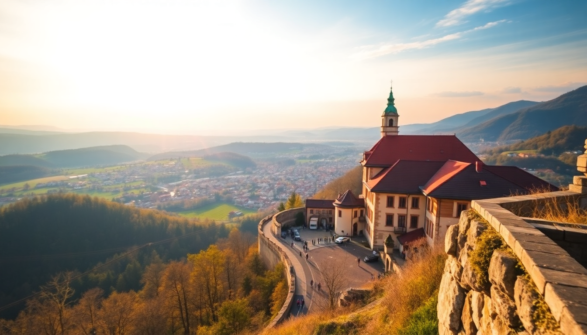

10 Days in Germany: Berlin, Munich, Frankfurt & Romantic Road

I spent ten days bouncing between Berlin’s raw energy, Munich’s beer-hall tradition, a detour through the fairy-tale Romantic Road, and Frankfurt’s business-meets-bratwurst vibe. It’s a lot of ground, but with the ICE trains, you’re never stuck in transit for more than four hours. Here’s exactly how I’d do it again — with the stops that earned their keep and the one or two I’d skip.
Is the Romantic Road worth the detour from Munich?
Yes, but only if you pick the right town. The Romantic Road is a 350-kilometer stretch of medieval villages between Würzburg and Füssen. Driving it end-to-end takes two days and feels samey after the third castle. I recommend one overnight in Rothenburg ob der Tauber — it’s touristy but genuinely preserved, not a Disneyland replica.
- Rothenburg ob der Tauber: Walk the city wall, visit the Medieval Crime Museum, and eat a Schneeball pastry (overhyped, but you’ll try it anyway).
- Skip: Dinkelsbühl unless you have extra time. It’s pretty but Rothenburg is prettier.
- Getting there: Take a regional train from Munich to Nuremberg, then switch to a slower line toward Rothenburg. Total: about 2.5 hours.
What’s the best way to get between Berlin, Munich, and Frankfurt?
The ICE high-speed network is your friend. I booked all trains through Deutsche Bahn directly — the app is clunky but works. Book Sparpreis tickets at least two weeks out to cut costs by half.
- Berlin to Munich: 4 hours, direct ICE. We left Berlin Hauptbahnhof at 9am and had lunch in Munich’s Viktualienmarkt by 1:30pm.
- Munich to Frankfurt: 3 hours, direct ICE. The route passes through Würzburg — if you’re doing the Romantic Road, you can hop off here instead of backtracking.
- Frankfurt to Berlin: 4 hours, direct ICE. The train station in Frankfurt is a zoo — arrive 20 minutes early to find your platform.
Where should I stay in Berlin, Munich, and Frankfurt?
I’m a neighborhood-first person. In Berlin, I stayed in Kreuzberg at a small apartment near Kottbusser Tor. It’s loud, gritty, and close to the best Turkish food in the city. In Munich, Glockenbachviertel was quieter but still walkable to the Altstadt. Frankfurt’s Bahnhofsviertel is convenient but skeezy at night — I’d recommend Sachsenhausen instead, across the river, where the apple wine taverns are.
- Berlin hotel: Hotel Oderberger in Prenzlauer Berg — a converted public bathhouse with a real swimming pool in the lobby. Book direct.
- Munich hotel: Motel One München Sendlinger Tor — clean, cheap, and a five-minute walk from Marienplatz. No frills, but the location is unbeatable.
- Frankfurt hotel: Hotel Villa Orange in Sachsenhausen — quiet, family-run, and a 10-minute tram ride from the financial district.
What are the top things to do in Berlin without wasting time?
Berlin is huge — don’t try to see all of it. Focus on three zones: Mitte (history), Kreuzberg (culture), and Prenzlauer Berg (chill). I spent two full days and felt satisfied, not rushed.
- Mitte: Book a guided tour of the Reichstag dome (free but you need to register weeks ahead). Walk through Brandenburg Gate at sunset when the crowds thin. The Memorial to the Murdered Jews of Europe is powerful — go early to avoid selfie-stick chaos.
- Kreuzberg: Eat a döner at Mustafa’s Gemüse Kebap (line is 30 minutes, worth it). Then walk the East Side Gallery — the open-air mural section of the Berlin Wall.
- Prenzlauer Berg: Spend a morning at Mauerpark flea market on Sunday. It’s packed, but you’ll find vintage Leica cameras and weird Cold War memorabilia.
Is Munich’s Marienplatz overrated?
Yes, but you still have to go. Marienplatz is the tourist epicenter — the Glockenspiel draws a crowd every day at 11am and 12pm. It’s fine for five minutes. The real Munich is in the beer halls and the English Garden.
- Hofbräuhaus: Go for the atmosphere, not the beer. It’s loud, packed, and full of Americans. Better bet: Augustiner-Keller near the Hauptbahnhof — locals, quieter, better Helles.
- English Garden: Bigger than Central Park. Rent a bike from Mike’s Bike Tours for two hours and ride to the Chinesischer Turm beer garden. Watch surfers on the Eisbach wave — it’s a standing river wave in the middle of the park.
- Day trip: Take the S-Bahn to Dachau concentration camp memorial. It’s 20 minutes from Munich central station. The site is free, the audioguide is excellent, and it’s a sobering half-day.
What should I eat and drink in Frankfurt?
Frankfurt gets a bad rap as a business hub, but the food scene is underrated. Skip the overpriced restaurants near the Hauptbahnhof and head to Sachsenhausen for proper Frankfurter Würstchen and Apfelwein.
- Apfelwein: Tart apple wine served in a blue-and-gray ceramic jug. Try it at Zum Gemalten Haus — the oldest tavern in Sachsenhausen, open since 1605.
- Frankfurter Würstchen: Not the hot dog you know. These are thin, smoked pork sausages served with horseradish and potato salad. Wagner’s near the Hauptbahnhof does them right.
- Green sauce: A cold herb sauce (seven herbs, traditionally) served with boiled potatoes and eggs. Frankfurter Stubb in the old town has a solid version.
How do I handle the logistics of the Romantic Road?
If you’re not renting a car, the Romantic Road is a puzzle. The Europabus (line 590) runs daily from Frankfurt to Munich via Rothenburg, but it’s slow and only runs once a day. I used trains and a single bus to connect.
- From Munich to Rothenburg: Train to Nuremberg (1 hour), then regional train to Rothenburg (1 hour). Stay overnight at Hotel Eisenhut — it’s right on the market square, creaky floors, old-world charm.
- From Rothenburg to Frankfurt: Train to Würzburg (1.5 hours), then ICE to Frankfurt (1 hour). If you have an extra day, stop in Würzburg for the Residenz palace — the staircase ceiling by Tiepolo is worth the detour.
- Car rental: If you do drive, rent from Sixt at Munich airport. The Romantic Road is well-signposted, but parking in Rothenburg is a nightmare — leave your car at the P4 lot outside the wall.
FAQ
Is 10 days enough for this route? Yes, if you move every 2-3 days. I did Berlin (3 nights), Munich (3 nights), Rothenburg (1 night), Frankfurt (2 nights). You’ll feel a little rushed, but you won’t miss the essentials. Drop Frankfurt if you want an extra day in Munich.
Do I need a rail pass or individual tickets? Individual Sparpreis tickets were cheaper for me than a Eurail pass. I paid about €120 total for three long-distance ICE rides. Book on the Deutsche Bahn app. For regional trains (like Munich to Rothenburg), buy a Bayern-Ticket for €25 — it covers unlimited regional travel in Bavaria for one day.
What’s the best time of year for this itinerary? May or September. June through August is peak tourist season — Rothenburg is shoulder-to-shoulder, and Berlin’s museums have hour-long queues. December is magical for the Christmas markets (especially Nuremberg and Rothenburg), but expect cold rain in Frankfurt.
Conclusion
- Spend three nights in Berlin to cover history and nightlife without burnout.
- Use Munich as a base for Dachau, beer gardens, and a day trip to the Alps (I skipped Neuschwanstein — it’s a two-hour bus ride for a half-built castle).
- Rothenburg ob der Tauber is the only Romantic Road town worth an overnight — skip the rest unless you’re driving.
- Frankfurt is a two-day city: eat, drink apple wine, and move on.
- Book ICE trains at least two weeks ahead for the best prices. Regional day passes are your friend for the Romantic Road leg.